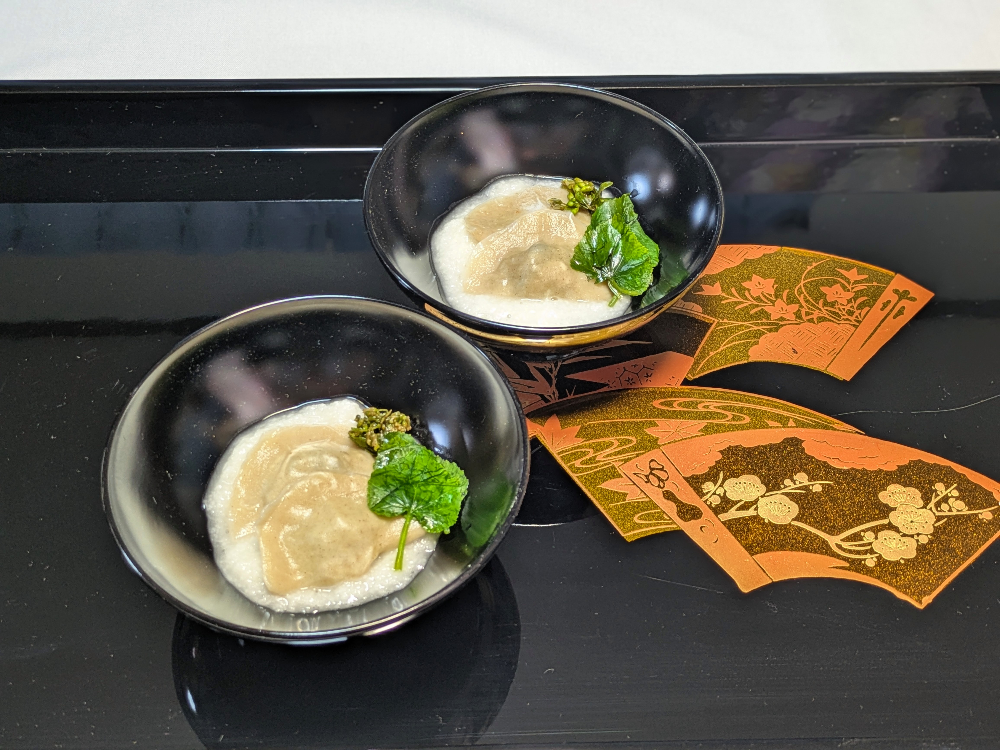
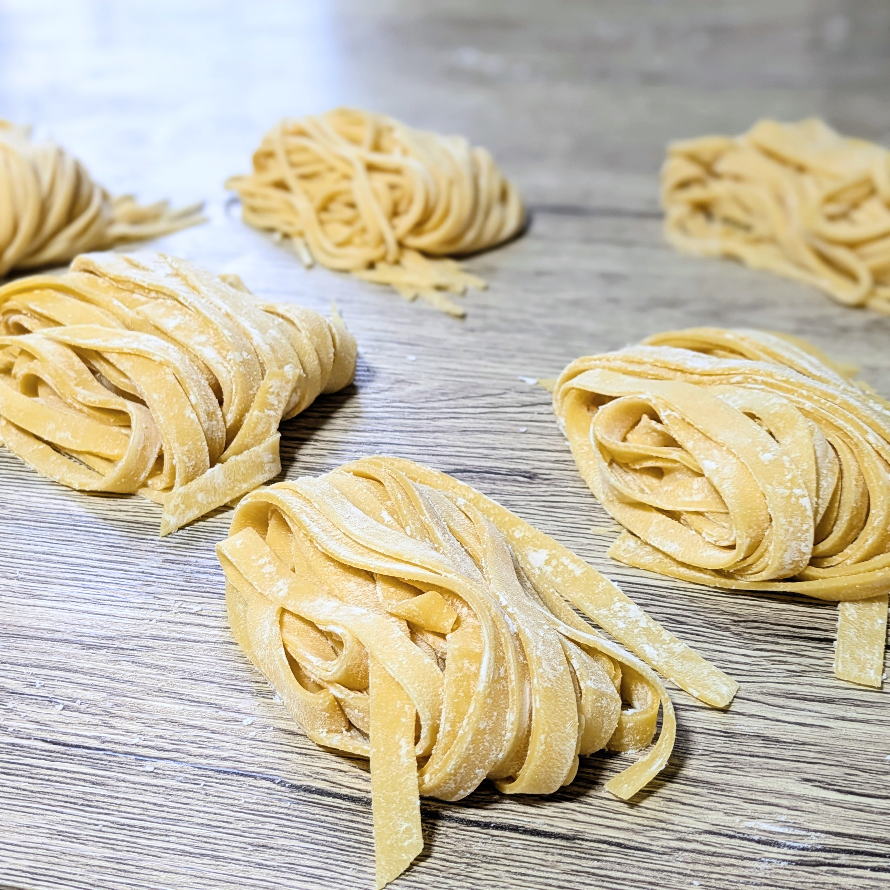

塩尻の小さな特等席で、
手仕事のぬくもりを味わう。

小さな中華の特等席へ、ようこそ
「中華房 希彩（きさい）」は、目の前で行き交う職人の手仕事と、湯気や音まで贅沢に味わっていただける小さなお店です。
大切な方との日常のお食事はもちろん、人生のハレの日や特別な記念日に、信州の豊かな自然が育んだ食材と、一から心を込めて作る本格中国料理で、記憶に残るひとときをお届けいたします。


手打ち・手包みにこだわる理由
私たちが麺や皮を「一から手作業」で作るのは、そこにしか宿らない食感とぬくもりがあるからです。その日の気温や湿度に合わせて加水率と熟成時間を繊細に見極め、毎日丁寧に生地を仕込みます。
手伸ばしした皮で一つひとつ真心を込めて包む水餃子は、噛んだ瞬間に信州の恵みともっちりとした極上の食感が広がります。確かな手仕事が生む、ここでしか味わえない一皿をご堪能ください。
紡がれた縁、信州の誇り

シナノユキマス（百瀬さん）
信州の清らかな冷水で大切に育てられたシナノユキマス。繊細で上品な味わいと、美しく引き締まった身質はまさに一級品。職人の確かな情熱が宿るこの魚を、最高の状態でお皿へと昇華させます。

洗馬焼（寺西尚子さん）
地元の土を使い、静かで力強い佇まいを見せる洗馬焼。作陶家・寺西尚子さんの温かみ溢れる器は、料理を優しく引き立て、お客様の時間をより特別なものへと彩ってくれます。
記念日・お祝いに
大切な節目を、希彩のおもてなしで。
お誕生日や結婚記念日、ご長寿のお祝い、精度高いご両家のお顔合わせなど、人生の特別な「ハレの日」にふさわしい演出をご用意しております。
- ◆ お祝いデザートプレート： コースをご注文の方へ、メッセージを添えた特製プレートをお仕立てします。
- ◆ 乾杯の贈り物： 記念日でのご利用の皆様へ、乾杯のドリンクをサービスいたします。
- ◆ お子様連れ歓迎： ベビーチェアや小さなお子様用のカトラリーも完備。ご家族で気兼ねなくお過ごしいただけます。

お品書き

お昼の献立
11:30 - 14:00 (L.O. 13:30)
信州の豊かな素材を、お気軽に楽しむ小さな特等席のランチ。手作りの点心と本格的な味わいをお昼からご堪能ください。
※点心は出来立ての一番美味しい状態でお出しするため、ご着席と同時に調理を開始いたします。
特製手包み点心と一品おかずの定食
¥1,350 — ¥1,600
一つひとつ真心込めて手で包むジューシーな点心と、隔週替わりの逸品を一度に楽しめる大満足のセット。お米は職人が火加減にこだわり、丁寧に土鍋で炊き上げるふっくら艶やかな仕上がりです。（※新潟県産コシヒカリを使用）
※少し軽めのボリュームに仕立てております。お好みの「贅沢オプション」と組み合わせてお楽しみください。
特製点心と手打ちこだわり麺セット
¥1,350 — ¥1,980
加水率と熟成時間にこだわり抜いた特製中華麺を使った、隔週替わりの楽しみな一杯。セットの点心はその時々の最高に美味しい状態のものを厳選して手包みいたします。
※少し軽めのボリュームに仕立てております。お好みの「贅沢オプション」と組み合わせてお楽しみください。
希彩 よくばりセット（麺・ご飯・おかず）
¥2,200 — ¥2,600
「手打ち麺も、土鍋ご飯も、おかずも、すべて欲張りに楽しみたい」という方のための特別なフルセット。希彩の魅力をひと通り堪能できる、お腹も心も満たされる大満足の組み合わせです。
希彩のフルコース仕様
お昼を彩る「贅沢オプション」
-
前菜付きへバージョンアップ +¥400
通常の小鉢を、旬の厳選素材を盛り込んだ「特製前菜」へと変更いたします。
-
特製デザート盛り合わせ +¥500
食後の余韻にゆったりと浸る、贅沢な別腹デザート。
-
ギルティーな昼飲み 各¥450〜
ひとくち生ビール、紹興酒、カウンター限定酒など。お昼休みの背徳感、または休日の贅沢に極上の一杯をどうぞ。

夜のコース
17:30 - 21:00 / ※当日15:00までに要予約
カウンター越しに届く湯気と音。時間をかけて発酵・熟成させた自家製調味料をベースに、厳選した器で彩る本格モダン中華のコース。
【希彩 おまかせコース】
¥6,600 / ¥8,800〜
前菜、点心「長野県支部金賞受賞 水餃子」、温菜、主菜、特製熟成中華麺、特製デザート盛り合わせ
アレルギーや苦手食材など伺ってお客様に最適なディナーを提案します。誕生日やお祝いの席などでもご利用ください。特製デザートプレートご用意させていただきます。
情景



スムーズなご予約
LINEでのご予約が最もスムーズです。
下のボタンから「予約テンプレート」をコピーし、LINEに貼り付けて必要事項をご記入の上、送信してください。